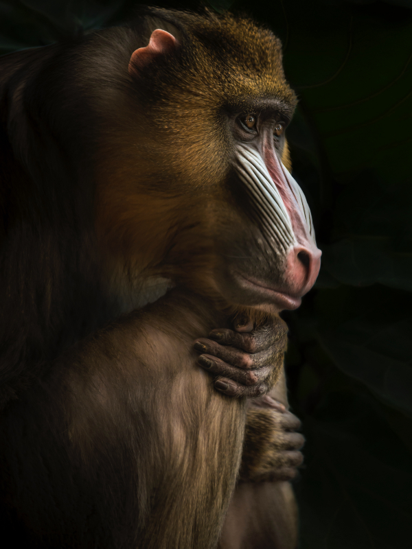

Animais Fantásticos
-

-

-

-

- 
-

Raposa
Raposas são pequenos a médios mamíferos onívoros pertencentes a vários gêneros da família Canidae. As raposas têm o crânio achatado, orelhas triangulares verticais, focinho pontiagudo e ligeiramente arrebitado e uma cauda longa e espessa
Doze espécies pertencem ao grupo monofilético de "raposas verdadeiras" do gênero Vulpes. Aproximadamente outras 25 espécies atuais ou extintas são parte do grupo parafilético das raposas sul-americanas ou do grupo periférico, que consiste na raposa-orelhas-de-morcego, raposa-cinzenta e raposa-das-ilhas.
raposas vivem em todos os continentes, exceto a Antártida. De longe, a espécie mais comum e difundida de raposa é a raposa vermelha (Vulpes vulpes) com cerca de 47 subespécies reconhecidas.[2] A distribuição global das raposas, juntamente com sua ampla reputação de astúcia, contribuíram para sua proeminência na cultura popular e no folclore em muitas sociedades ao redor do mundo. A caça à raposa com matilhas de cães, há muito uma atividade estabelecida na Europa, especialmente nas Ilhas Britânicas, foi exportada por colonos europeus para várias partes do Novo Mundo.
Esquilo
Os Esquilo (Sciurus vulgaris) é um mamífero pertencente à família Sciudidae e à ordem rodentia. Sua família comprende os esquilos arborícolas, terrestres, voadores e as marmotas, entre outros. Dentre os esquilos arborícolas e terrestres há mais de 230 espécies e no grupo dos esquilos voadores estão incluídas 43 espécies conhecidas. O esquilo mais comum, o europeu, possui pelagem avermelhada, cauda longa e tem pelos compridos nas orelhas.
O tamanho deste animal é variável, o menor deles é o esquilo pigmeu africano, que mede 13 cm de comprimento. Os maiores são os esquilos gigantes da Ásia, seu comprimento pode chegar a 90 cm. Este animal pode ser encontrado no mundo todo, menos na Austrália. Normalmente vivem em bosques de coníferas e caducifólias (plantas que em determinada época do ano perdem suas folhas). Embora existam espécies que podem ser encontradas no deserto ou na taiga. Para viver nestes lugares, os esquilos passaram por adaptações e desenvolveram estratégias que lhes permitem suportar as temperaturas extremas que caracterizam estas regiões.
O esquilo não hiberna (não apresenta queda da temperatura corporal, fato que caracteriza a hibernação), mas alterna fases de sono mais longas que o normal, acorda e sai em busca dos seus alimentos. Ao reduzir sua atividade física, reduz sua necessidade de obter alimentos.
Urso
Os Ursos (latim científico: Ursidae) constituem uma família de mamíferos plantígrados, geralmente de grande porte, contendo os ursos e os pandas.
Algumas características comuns dos ursos são pelagem espessa, rabo curto, o olfato desenvolvido e as garras não retráteis. Os ursídeos são geralmente animais omnívoros, mas se alimentam principalmente de carne.
A maioria dos ursos costumam preparar-se para hibernar durante o inverno, comendo grandes quantidades de comida antes de entrar em uma toca para o período de sono profundo[2].
Lobo
O lobo é uma espécie de mamífero que faz parte da família Canidae, a mesma dos cachorros. Geralmente, o termo lobo é usado para se referir à espécie Canis lupus, a qual é também conhecida popularmente como lobo-cinzento. Neste texto, adotaremos essa denominação. Essa espécie se destaca por ser encontrada no hemisfério norte, viver em grupos e ser carnívora.
Características do lobo: Animal terrestre que ocupa uma grande variedade de hábitats, o lobo ocorre na tundra, em regiões de floresta, pradarias e até mesmo em paisagens áridas. Anteriormente, a espécie era encontrada na maior parte do hemisfério norte, entretanto, alterações em seu habitat e perseguição humana fizeram com que o lobo desaparecesse de algumas áreas.
Comportamento do Lobo: Os lobos vivem em grupos denominados alcateias. Esses grupos podem ser considerados grupos familiares, constituídos pelos progenitores, os filhotes daquele ano do casal e alguns filhotes de anos anteriores. É possível observar a presença de indivíduos aparentados dos adultos reprodutores ou indivíduos não aparentados. Em geral, uma alcateia possui de três a 11 indivíduos, porém, há registros de grupos formados por mais de 40 lobos. Eles apresentam incrível capacidade de comunicação, a qual é realizada por meio de expressões faciais, linguagem corporal e vocalização. Quanto à vocalização, esses animais são capazes de emitir uivos que permitem identificar a localização de membros de um grupo, reuni-los e indicar aos indivíduos os limites dos territórios. Os lobos também marcam seu território com cheiro.
Babuíno
Babuíno(do francês babouin) é a designação genérica para antropoides cercopitecídeos do gênero Papio e afins, caracterizados pelo focinho pontudo, caninos grandes, bochechas volumosas e calosidades nas nádegas. É um animal semi-quadrúpede da ordem dos primatas que mede até 120 centímetros de comprimento. Vive na África e seu habitat natural é nos campos abertos (savana, pastagens ou terrenos rochosos).
Ao contrário dos macacos, os babuínos passam a maior parte do tempo no chão. Suas caudas não são preênseis. Os babuínos são grandes lutadores e demonstram pouco medo de outros animais, inclusive seres humanos. Todos têm hierarquias fortes e complexas dentro dos grupos familiares. Geralmente os babuínos vivem em grandes bandos comandados pelos machos dominantes. Ao contrário do que ocorre com a maioria das outras espécies, quase não há disputas pelo controle do bando ou pelo direito de se acasalar com as fêmeas, sendo o único privilégio dos machos dominantes alimentar-se primeiro quando se encontra alimento.
Os babuínos são onívoros (omnívoros), isto é, comem muitos tipos diferentes de alimento. A sua dieta, entretanto, varia de acordo com a estação do ano, o território que está sendo habitado, a idade e o sexo do indivíduo. As fêmeas e os filhotes recém-nascidos, por exemplo, alimentam-se de capim, já os filhotes mais desenvolvidos comem casca de árvore, insetos e lagartos.
Leão
O leão [feminino: leoa] (nome científico: Panthera leo) é uma espécie de mamífero carnívoro do gênero Panthera e da família Felidae. A espécie é atualmente encontrada na África subsaariana e na Ásia, com uma única população remanescente em perigo, no Parque Nacional da Floresta de Gir, Gujarat, Índia. Foi extinto na África do Norte e no Sudoeste Asiático em tempos históricos, e até o Pleistoceno Superior, há cerca de 10 000 anos, era o mais difundido grande mamífero terrestre depois dos humanos, sendo encontrado na maior parte da África, em muito da Eurásia, da Europa Ocidental à Índia, e na América, do Yukon ao México. É uma dos quatro grandes felinos, com alguns machos excedendo 250 quilogramas em peso, sendo o segundo maior felino recente depois do tigre.
A pelagem é unicolor de coloração castanha, e os machos apresentam uma juba característica. Uma das características mais marcantes da espécie é a presença de um tufo de pelos pretos na cauda, que também possui uma espora. Habita preferencialmente as savanas e pastagens abertas, mas pode ser encontrado em regiões mais arbustivas. É um animal sociável que vive em grupos que consiste das leoas e suas crias, o macho dominante e alguns machos jovens que ainda não alcançaram a maturidade sexual. A dieta consiste principalmente de grandes ungulados e possuem hábitos noturnos e crepusculares, descansando e dormindo na maior parte do dia. Leões vivem por volta de 10-14 anos na natureza, enquanto em cativeiro eles podem viver por até 30 anos. Alguns animais desenvolveram o hábito de atacar e devorar humanos, ficando conhecidos como "devoradores de homens".
A espécie está classificada como "vulnerável" pela União Internacional para a Conservação da Natureza e dos Recursos Naturais (IUCN), e sofreu um declínio populacional de 30-50% nas últimas duas décadas no território africano. Na Ásia, o leão está confinado a uma única área protegida e sua população é estável, mas está classificado como "em perigo", já que a população não passa de 350 animais. Entre as ameaças, a perda de habitat e os conflitos com humanos são as principais razões de preocupação na sua conservação. Por centenas de anos, o leão tem sido usado como símbolo de bravura e nobreza em diversas civilizações e culturas da Europa, Ásia e África. Está amplamente representado em esculturas, pinturas, bandeiras nacionais, brasões, e em filmes e na literatura contemporâneos.